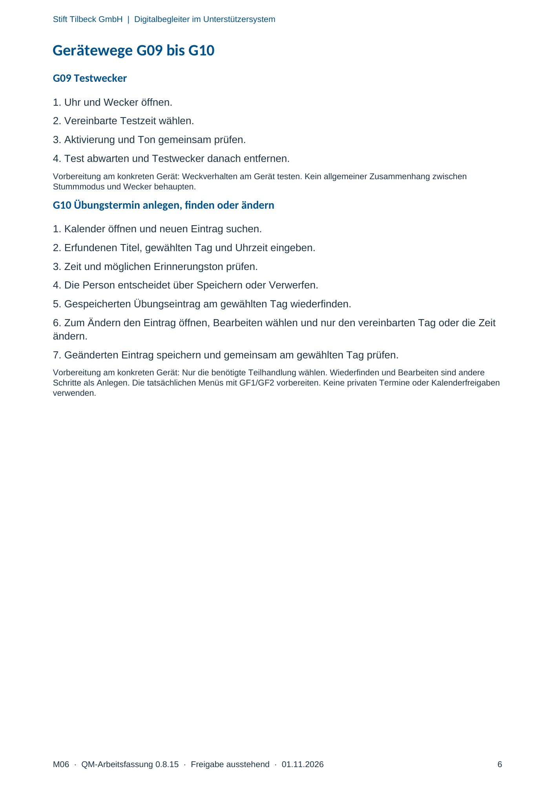

M06 · Originalseite 6
Übungstermin anlegen, finden oder ändern
Original-Druckseite mit G10. Auf derselben Seite stehen außerdem G09. Diese sind dadurch keine zusätzliche Aufgabe.
Fragen und Ankreuzfelder werden auf dem Ausdruck bearbeitet. Die Lesefassung speichert keine Antworten.
Lesefassung · Seite 6
Stift Tilbeck GmbH | Digitalbegleiter im Unterstützersystem
Gerätewege G09 bis G10
G09 Testwecker
1. Uhr und Wecker öffnen.
2. Vereinbarte Testzeit wählen.
3. Aktivierung und Ton gemeinsam prüfen.
4. Test abwarten und Testwecker danach entfernen.
Vorbereitung am konkreten Gerät: Weckverhalten am Gerät testen. Kein allgemeiner Zusammenhang zwischen
Stummmodus und Wecker behaupten.
G10 Übungstermin anlegen, finden oder ändern
1. Kalender öffnen und neuen Eintrag suchen.
2. Erfundenen Titel, gewählten Tag und Uhrzeit eingeben.
3. Zeit und möglichen Erinnerungston prüfen.
4. Die Person entscheidet über Speichern oder Verwerfen.
5. Gespeicherten Übungseintrag am gewählten Tag wiederfinden.
6. Zum Ändern den Eintrag öffnen, Bearbeiten wählen und nur den vereinbarten Tag oder die Zeit
ändern.
7. Geänderten Eintrag speichern und gemeinsam am gewählten Tag prüfen.
Vorbereitung am konkreten Gerät: Nur die benötigte Teilhandlung wählen. Wiederfinden und Bearbeiten sind andere
Schritte als Anlegen. Die tatsächlichen Menüs mit GF1/GF2 vorbereiten. Keine privaten Termine oder Kalenderfreigaben
verwenden.
Originalseite ansehen
